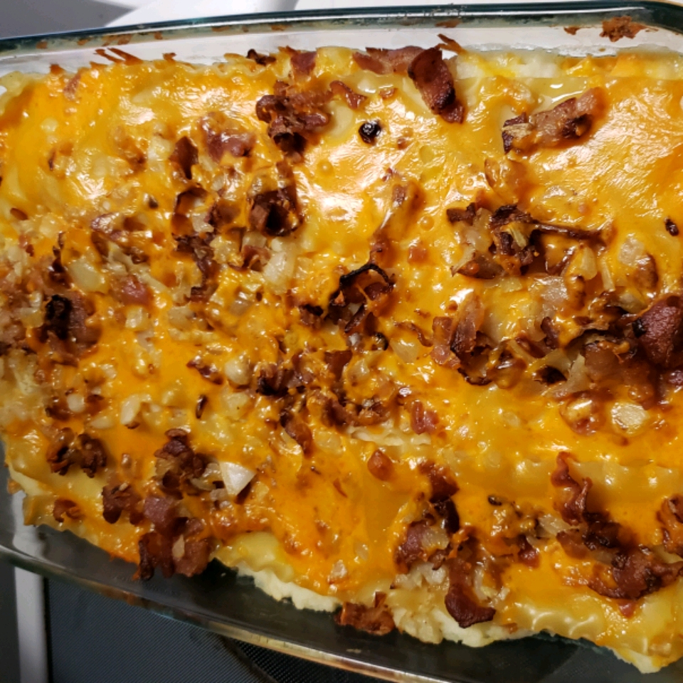

Home Page
Lazy Perogies

Description
Faucibus scelerisque eleifend donec pretium vulputate. Non odio euismod lacinia at quis risus sed vulputate odio. Aliquet sagittis id consectetur purus ut faucibus pulvinar elementum integer. Sit amet risus nullam eget felis eget. Lobortis elementum nibh tellus molestie nunc. Morbi blandit cursus risus at ultrices mi tempus. Neque convallis a cras semper auctor neque.
Ingredients
- 9 uncooked lasagna noodles
- 4 large baking potatoes, peeled and cut into 1-inch chunks
- ½ cup milk
- 1 tablespoon butter
- 1 teaspoon onion salt, or to taste
- salt and black pepper to taste
- 1 cup shredded Cheddar cheese
- 1 pound bacon
- 1 onion, chopped
- 2 cups dry cottage cheese
- 1 egg
- 1 teaspoon onion salt, or to taste
Directions
- Fill a large pot with lightly salted water and bring to a rolling boil. Once the water is boiling, stir in the lasagna noodles, about 3 or 4 at a time, and return to a boil. Cook the noodles uncovered, stirring occasionally, until the pasta has cooked through but is still firm to the bite, about 10 minutes per batch. Drain well in a colander set in the sink, and lay the cooked noodles flat on waxed paper or aluminum foil while you finish cooking the rest of the noodles.
- Preheat oven to 350 degrees F (175 degrees C). Grease a 9x11-inch baking dish.
- Place the potatoes into a large pot and cover with water. Bring to a boil over high heat, then reduce heat to medium-low, cover, and simmer until tender, about 20 minutes. Drain and allow to steam dry for a minute or two. Using a potato masher, mash the potatoes with the milk and butter until smooth. Stir in 1 teaspoon of onion salt, and season with salt and pepper. Set the mashed potatoes aside to cool. When cooled, mix with shredded Cheddar cheese.
- Place the bacon in a large, deep skillet, and cook over medium-high heat, turning occasionally, until evenly browned and almost crisp, about 10 minutes. Place the onion into the hot bacon fat, and cook and stir until the onion is translucent, about 8 minutes. Break the bacon into pieces with a spoon or spatula, and set the bacon and onion aside. Mix the cottage cheese, egg, and 1 teaspoon of onion salt in a bowl.
- To make the casserole, place 3 lasagna noodles into the prepared baking dish, and spread with the cottage cheese mixture in an even layer. Top the cottage cheese with 3 more lasagna noodles, then spread potato-cheese mixture in a layer. Top the mashed potato layer with 3 more noodles, then spread the bacon and onion into an even layer on top of the casserole.
- Cover the casserole with aluminum foil, and bake in the preheated oven until the cheese is melted and the casserole is hot, about 30 minutes. Allow to set for about 10 minutes before serving.